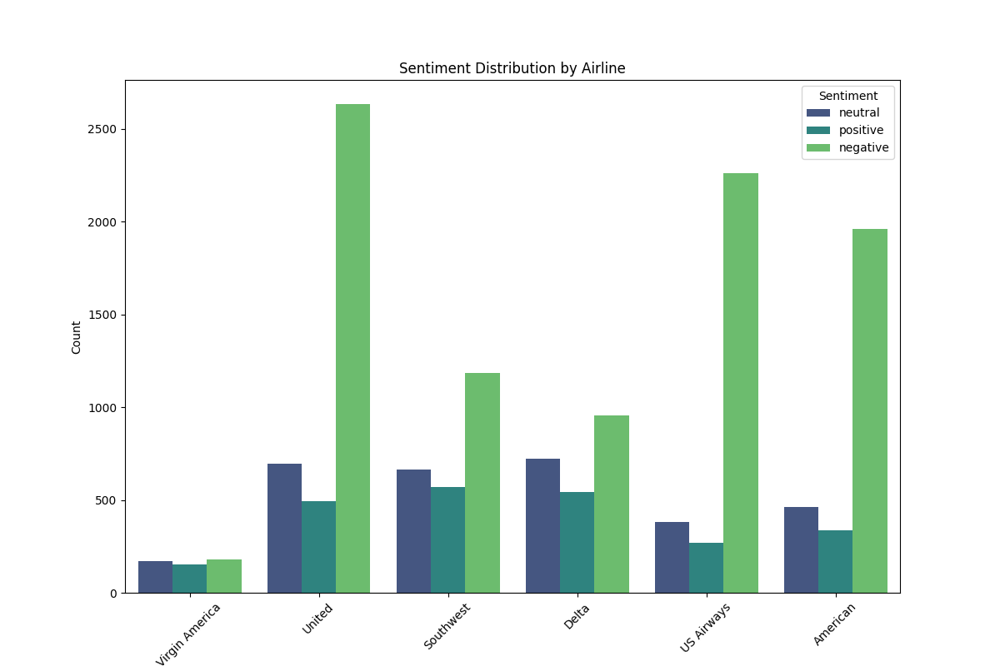

Airline Sentiment Analysis Dashboard
Analysis Summary
This dashboard presents the results of sentiment analysis on airline-related tweets. The analysis includes:
- Distribution of sentiments (positive, negative, neutral)
- Sentiment breakdown by airline
- Top negative reasons
- Comparison of predicted vs actual sentiments
Note: The dataset contains pre-labeled sentiments. Our analysis also performs new sentiment prediction using TextBlob for comparison.
Overall Sentiment Distribution

Sentiment Distribution by Airline

Top 10 Negative Reasons

Negative Reasons by Airline

Confidence Distribution for Negative Sentiments

Detailed Negative Feedback Analysis
The analysis reveals specific patterns in negative feedback:
- Customer Service Issues: Most common complaint across all airlines
- Late Flight: Significant delays affect passenger satisfaction
- Lost Luggage: Baggage handling problems are frequent
- Booking Problems: Issues with reservations and ticketing
- Flight Attendant Complaints: Service quality concerns
Airline-Specific Insights:
- United Airlines has the highest number of negative tweets
- US Airways shows high customer service complaints
- American Airlines frequently mentioned for flight delays
- Most negative sentiments have high confidence scores (>0.6)
Key Insights
- Most tweets express negative sentiments towards airlines
- Common negative reasons include customer service issues, flight delays, and baggage problems
- Some airlines have better sentiment scores than others
- TextBlob predictions show reasonable accuracy compared to human-labeled data
- Negative feedback is highly confident, indicating clear dissatisfaction